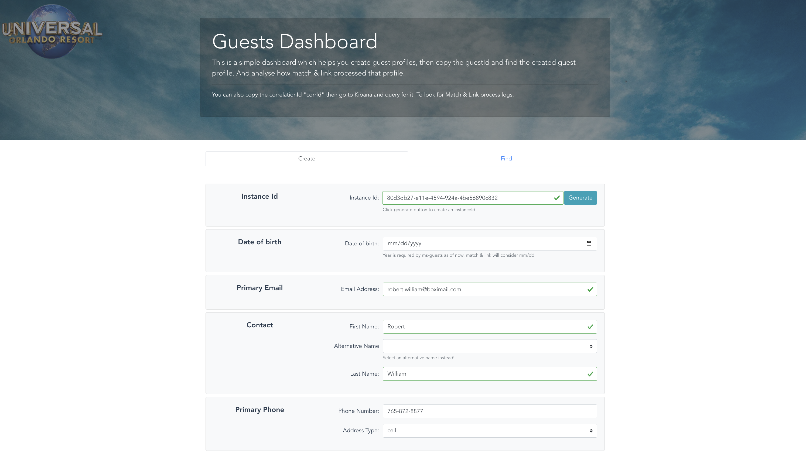
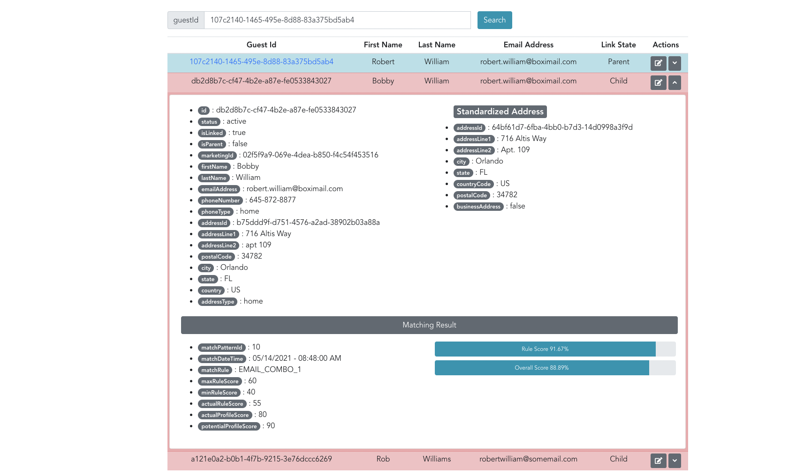

AWS SA Interview
Match & Link Processor
Prepared by Kareem Aljabr
What is Match & Link?
- Asynchronous process
- Consumes Kafka events produced by guest profile service.
- When a profile is created or updated it searches for a matching profile.
- If found, both profiles will be linked.
History ⏳
Existing Node.js microservice, ms-guest, used to proxy SOAP requests to an IBM MDM AE.
IBM InfoSphere MDM AE : IBM InfoSphere Master Data Management Advanced Edition
Issues Part #1
- written by a team of developers from IBM, their contracts were terminated.
- Lack of documentation.
- Difficult to maintain due to low unit test coverage. And lack of integration tests.
- Loose API contracts
- Multiple endpoints with the same functionality.
- DB models CRUD operations endpoints exposed.
Issues Part #2
- Many performance issues in production.
- Synchronous Match & Merge
- Poor design. An unregistered guest profile is created whenever you land on the website.
- Resulted in creating 100 millions of ghost profiles.
Guests Dashboard
I created a UI Dashboard to allow both QA and Business teams to test the Match & Link process.
Create Guest Profile

Validate Match & Link

Validate Match & Link

Validate Match & Link

Validate Match & Link

Validate Match & Link

Validate Match & Link